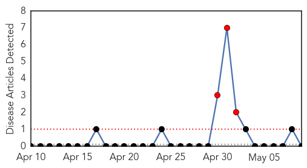

Unknown
30-Day Web Trend
0 alerts, 0 warnings

30-Day Twitter Trend
1 alerts, 0 warnings

Article Locations
Article Confidences
Top Articles:
- 0.917
- Chicago Tribune
- 0.917
- Chicago Tribune
- 0.854
- 2 deaths fuel anthrax scare in Simdega
- 0.816
- Malaria 'Viral' Vaccine Shows Promising Early Results
- 0.797
- 22 Cases Of Polio Suspected In Syria, World Health Organization Says
- 0.721
- Drinking water report names nitrate contamination as growing challenge in Minnesota; governor urges action
- 0.706
- International donations have been slow to meet Nepal’s needs after quake, UN official says
- 0.700
- ‘I could drop dead’: Woman’s 15 year battle with Lyme disease
- 0.685
- Global warming may spread lyme disease
- 0.657
- More asthma clinics to be opened, says health ministry official
- 0.645
- Bird Flu Found At New Iowa Farms Forcing Execution Of 4 Million Chickens
- 0.642
- PAS distemper outbreak stirring concerns
- 0.632
- CDC Updates Listeriosis Outbreak Linked to Blue Bell Ice Cream
- 0.626
- What bugs are lurking in our water?
- 0.616
- Miri in urgent need of one more state hospital — Dr Sim – BorneoPost Online
- 0.604
- Explorers find infamous pirate Captain Kidd's treasure in Madagascar
- 0.604
- Russia celebrates WWII victory with huge military parade
- 0.604
- Australian police thwart imminent bomb attack, teen charged
- 0.604
- Airbus military plane crashes in Spain
- 0.575
- Many Americans Under 50 Living With Cold Sore Virus
- 0.568
- Fecal microbiota transplant cures C. diff, blocks multi-drug resistant pathogens
- 0.567
- We have great medical professionals but… – Usman Isah
- 0.563
- Report outlines key health issues
- 0.553
- Milk Makers Fest E. coli Patient Still Hospitalized
- 0.541
- 'There's No Outbreak' — Reports of Chlamydia Outbreak at Abstinence-Only Texas High School Are False, Say State Health Officials
- 0.539
- Fighting The Battle Against The Rise of Tuberculosis, Articles
- 0.505
- Newborn and Child Health Education Through Haitian Art
- 0.503
- Diabetes a threat to Kuwait - Kuwait Times
Top Tweets:
- 0.578
- Primera noche en todo el semestre que tendré que madrugar para terminar un asunto universitario. Tanto que lo evito y mira.
Bubonic Plague
30-Day Web Trend
3 alerts, 0 warnings

30-Day Twitter Trend
0 alerts, 0 warnings

Article Locations

Article Confidences

Top Articles:
-
No articles found for May 09, 2015
Top Tweets:
-
No tweets found for May 09, 2015